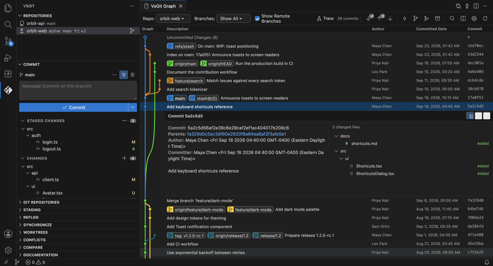
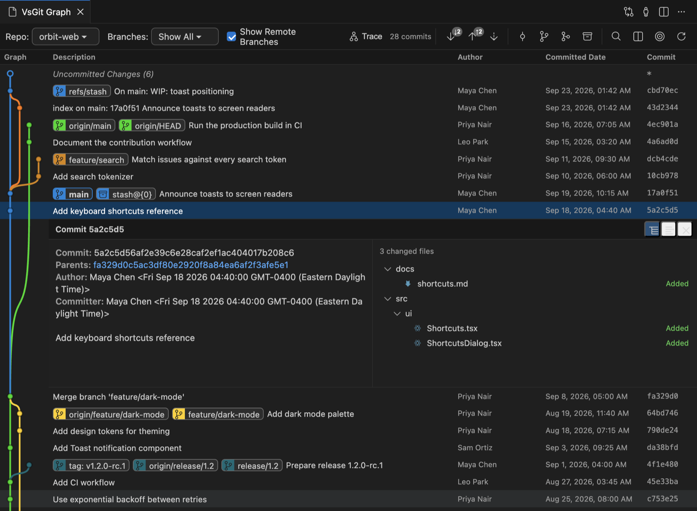

Interactive rebase, without the text file.
Reorder, pick, reword, squash and fixup in a real form. The editor shim is wired up for you over authenticated IPC.
VsGit for Visual Studio Code
A complete, power-user Git client built into VS Code — interactive graph, rebase, worktrees, LFS, Gerrit and more. Driving the real git binary. Nothing approximated.

Every operation is a genuine git invocation. The same config. The same hooks. The same credential helpers, aliases and .gitignore rules. No libgit2. No JavaScript reimplementation. Just Git — beautifully surfaced.
vsgit.* settings to tuneGit Graph
An SVG-rendered DAG with colour-coded lanes, inline ref pills, expand-in-place commit details, flow tracing and fuzzy find. Open it with ⌘⇧G G.

Lanes, branch, remote, stash and tag pills — with an expanded commit showing metadata and changed files.
Features
Reorder, pick, reword, squash and fixup in a real form. The editor shim is wired up for you over authenticated IPC.
A searchable log with ref badges, author and message filters, an all-branches toggle and Compare-Branches mode.
Go straight from the Conflicts view into VS Code's three-way merge editor. Continue, skip or abort from a banner.
Split Commit / Commit & Push / Commit & Sync, amend, sign-off and GPG options, hunk-level staging, tree or list.
Who changed this line, and why — right in the editor. Toggle with ⌘⇧G A.
Add, open, lock and prune linked worktrees from their own view — work on two branches without stashing a thing.
Edit repository and global config, browse system scope — every write validated against an allow-list.
VsGit publishes real SCM resource groups, so VS Code's own Source Control panel gets VsGit's menus, quick-diff gutters and commit input.
Multi-root aware views with branch and ahead/behind counts. Pick an active repository and every panel follows.
A searchable reference for every VsGit component, a Git glossary with cautions for history-rewriting concepts, and all 173 operations with their entry points.
Rebase, LFS, notes, bisect, subtree, archive, patch, Gerrit, submodules, maintenance — no terminal required.
Coming from Eclipse?
Team, Compare With and Replace With menus on every Explorer file and editor. A reference picker with Local, Remote Tracking, Tags and References sections. A Git Graph with Eclipse-style columns. Familiar to anyone coming from EGit, gitk, git-cola or GitKraken.
Keyboard first
Shortcuts are chords: press ⌘⇧G, release, then the letter.
Security
Your repository runs hooks and holds credentials. VsGit treats that with the seriousness it deserves.
Git is spawned with an argv array, so ;, |, $() and backticks are inert.
Refs and URLs starting with - are rejected, as are the ext:: and fd:: transports.
Credential and editor channels require a per-session 256-bit token, compared in constant time over 0600 sockets.
User-info and token/password query parameters are stripped from any URL shown in the UI.
Retained git output is capped at 64 MB, and hung processes escalate from SIGTERM to SIGKILL.
Only nonce'd scripts and bundled assets run. Every inbound message is validated before any write.
Get started
Open the Extensions view, search for VsGit and click Install. Or use the command in the hero above.
Open a folder with a Git repository and trust the workspace — Git runs your hooks and config.
Click the VsGit icon in the activity bar and choose your active repository. Everything follows it.
The official home for VS Code extensions.
Get it on the MarketplaceFor VSCodium, Gitpod, Eclipse Theia and other builds.
Get it on Open VSXDownload the .vsix and use Install from VSIX….
Want every view? Staging, Reflog, Synchronize, Worktrees, Conflicts and Compare appear when you enable advanced views:
// settings.json
{ "vsgit.showAdvancedViews": true }git 2.20+ on $PATH (or vsgit.git.path)git-lfs for LFS commands (optional)A trusted, local workspacegit CLISingle argv-only executor · pure, unit-tested output parsers · no libgit2It can sit alongside it. VsGit publishes its own Source Control provider, so you may see each repository twice. If you want VsGit to be the only provider, set "git.enabled": false.
VsGit discovers repositories from your open workspace folders. Make sure the folder containing .git is open, or run VsGit: Refresh.
Set vsgit.git.path to the absolute path of your git binary, then reload the window. VsGit needs Git 2.20 or later.
They're hidden until you enable vsgit.showAdvancedViews in your settings.
The workspace is in Restricted Mode. VsGit needs trust because Git runs the repository's hooks and configuration. Use Manage Workspace Trust to trust it. Virtual workspaces aren't supported for the same reason.
VsGit uses your existing git credential helper through GIT_ASKPASS. If a remote needs authentication you get a native VS Code prompt, delivered over an authenticated, token-protected IPC channel.
Yes. Enable vsgit.showCommandPreview to preview every mutating git command before it executes.
Completely. VsGit is open source under the MIT License. Contributions, issues and ideas are welcome on GitHub.
Free. Open source. Ready when you are.